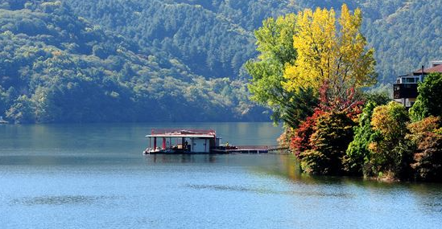
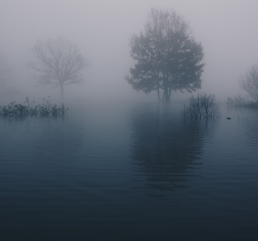
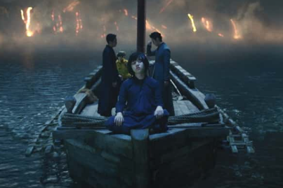

60221320 최은택

작가소개
작품소개
작품분석
작품소감
참고문헌

작품분석
시간적, 공간적 배경

작품의 시간적 배경은 1900년대 초이며
공간적 배경은 부우루의 한 호숫가이다.
이 호숫가에는 작은 섬도 딸려있으며
봄철에는 뗏목이 떠내려온다.
이야기 속 아이들이 뗏목을 만들고
여행을 떠난 것은 여름이었다.
작품에서 큰 시간의 흐름이 있지는 않으며
전체적인 이야기의
사건 발생~ 발생후
1년 정도의 시간적 격차가 존재한다.
등장인물 성격분석
주인공 : 하칸 보다 한 살 어린 9살이며 하칸을 잘 따르고 그를 의지한다.
위험을 무릅쓰고 하칸을 다시 찾으려 애쓰는 것으로 보아 책임감이 있고 하칸을
정말 좋아했던 것 같다.
하칸 : 주인공 보다 한 살 많은 10살이며 작품 내 비극의 사건의 주인공이다.
장난꾸러기이지만 나잇대에 맞지 않게 세상일에 훤하고 책임감이 강하며 성숙하고
올곧다.
의문의 사나이, 네덜란드인 : 사실상 나는 작품 속 이 두 인물을 하나로 묶어서 보아
야 한다고 생각한다. 이유는 아래에서 설명하겠지만 이야기 내에서 주인공은 의문의
사나이가 이야기속 네덜란드인이라고 생각하며 그가 하칸을 데려갔다고 생각한다.
작품 중 뗏목에서 하칸을 데려간 인물이다.
할아버지 : 보트 속의 남자가 하칸을 데리고 가고 남은 주인공을 구해준다.
어디에나 있을법한 일반적인 할아버지이며 하칸에게 호통을 치기도 하지만
할아버지의 보트를 몰래 타고 하칸을 찾으러간 주인공을 꾸짖지 않고
이해해주는 면모를 보이는등 주인공을 아끼는 것 같다.
작품 속 키워드가 의미하는 것
안개속 호수

안개 속 호수 : 작품 내에서 안개 속 호수는 특이한 역할을 한다. 주인공과 하칸이 있는
뗏목으로 처음 보트 속의 남자가 다가온 것도 호수에 안개가 끼기 시작했을 무렵이며
주인공이 할아버지의 보트를 몰고 다시 하칸을 찾으러 갈때도 호수에 안개가
끼기 시작하면서 얼마 지나지 않아 하칸을 만났다.
안개 속 호수는 작품 내에서 하칸의 죽음을 상징하고 주인공과 하칸을 이어주는
공간적 매개체로 볼 수 있다.
죽음을 형상화한 보트 속의 남자 그리고 사실상 죽은 하칸을 다시 대면하는 상황은
안개 속 호수에서 일어난다.
작품 내에서도 이를 뒷받침할 주인공의 언급이 있다.
359p : “안개 속에 혼자 있게 되면 이상하게도 다른 때 혼자 있을 때보다 훨씬 더
썰렁한 느낌이 든다. 그리고 감각이 예민해지는 법이다.”
=> 무언가 안개 속 호수의 신비로움을 의미하는 듯한 설명.
장대
장대 : 장대는 주인공이 하칸을 다시 찾아 나서고 하칸을 만난 후 그가 떠나가며 남긴
자리에 있었던 장대를 말한다. 나는 이 장대가 사실상 죽은 하칸의 주인공에 대한
배려라고 생각한다.
주인공이 죽음을 이해하고 하칸을 정신적으로 떠나보내 줌으로서 장대는
그 만남의 증표가 되고 하칸을 추억하고 하칸을 의미하는
유일한 도구가 되었으니 말이다.
뗏목과 호수

뗏목과 호수 : 우리 동양과 서양을 통틀어 문화에서
일반적으로 강과 배는 죽음을 상징하는
상징물로 많이 사용되어왔다. 예로 삼도천, 스
틱스, 요단강 등이 존재한다. 이 강들 모두 죽음을
의미하고 있으며 지상과 저승의 경계를 잇는
신비로운 공간이라고 본다. 강을 건널땐 하나같이
배를 이용한다는 것이 특징이다.
사실 작품에서
뗏목과 호수의 비중이 크며 많은 사건들이 발생
한다. 나는 뗏목과 호수가 위 삼도천, 스틱스,
요단강처럼 죽음을 상징하며 결국 누군가 죽을
것이라는 복선을 나타낸다고 생각한다.
의문의 남자는 하칸의 죽음을 형상화 한 것이다
작품을 분석하다 보면 사실상 알 수 있는 정답이 있는데 바로 하칸의 죽음이다.
사실상 하칸은 죽은 것이고 보트 속의 의문의 남자는 주인공이 어린 나이에 죽음을
받아들이지 못하고 만들어 낸 죽음의 형상화인 것이다.
작품 속의 힌트들을 하나하나 살펴보자
작품 속 할아버지의 반응
작품내용 중 353~355를 보면 주인공이 무사히 집으로 돌아와 안정되었을 때 주인공은
계속 하칸의 행방과 그 의문의 남자를 할아버지에게 물었다. 그러나 분위기가
조금 이상하다. 할아버지는 이 상황을 침묵하셨고 마을 사람들은 하칸을 찾으려
하지도 않았다.
글 중 할아버지의 대사이다.
“하칸 그 애는 이제 다시 여기 나타나지 않을게다! ” => 도대체 왜일까?
실종된 아이를 찾으려 온 마을이 노력하는 것이 당연하다.
그러나 할아버지는 위와 같이 말씀하신다.
하칸이 죽은 것이라 찾아나설 필요가 없다는 것.
이를 통해 사실상 하칸은 죽은 것이라 볼 수 있다.
하칸의 미소
주인공이 할아버지를 배를 타고 다시 호수로 나가 하칸을 만날 때이다. 안개 속 호
수에서 하칸을 다시 기적처럼 만났는데 둘은 아무말도 하지 않는다.
이는 일반적인 행동일 수 없다.
그리고 가장 중요한 하칸의 미소의 의미 : “나는 여기 있다. 그러니 너는 더 이상 날
찾을 필요가 없다. 너는 나를 찾은 것이 아니냐?” 라고 설명을 하는데 이를 통해
이미 주인공 곁에 하칸이 함께하고 있으므로 죽은 하칸을 더 이상 찾을 필요가
없다는 것을 의미하는 것 같다.
하칸의 미소를 통해 주인공이 깨달음을 얻을 수 있는 매개체가 된 것 같고
의문이 해소되는 첫 번째 단서라고 생각한다.
의문의 남자와 네덜란드인
그렇다면 의문의 남자를 우린 형상화 된 죽음이라 볼 수 있겠다. 아직 정신적으로
어려서 가까운 이의 죽음을 받아 들이지 못하는 9살 주인공이 만들어낸 죽음의
형상 말이다. 실제로 어린아이들은 죽음이라는 개념에 대해서 이해하지 못한다.
즉 죽음이라는 것이 부재의 개념이라고만 이해할 뿐 육체적으로 죽는다는 것에대한
이해를 할 수가 없다. 이런 것 들을 통틀어 보았을 때 주인공이 하칸의 죽음을 이해
하기 위해 하칸의 부재를 이해하기 위해 스스로 보트 속의 남자, 즉 의문의 남자를
만들어 낸 것이라 보아야 한다. 또한 이야기 내용 중 네덜란드인을 통해 주인공은
의문의 남자를 대칭 시켜 자신에게 일어난 모든 일들의 의문을 해소하려고 한다.
이는 아직 죽음이라는 것을 받아들이기 힘든 주인공의 해소 도구라고 할 수 있다.